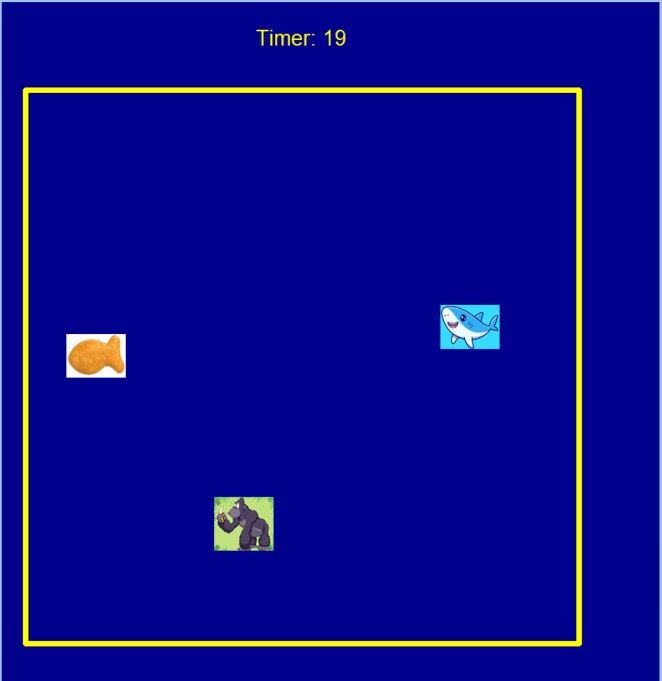
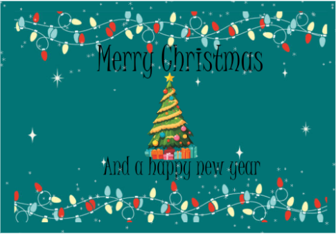
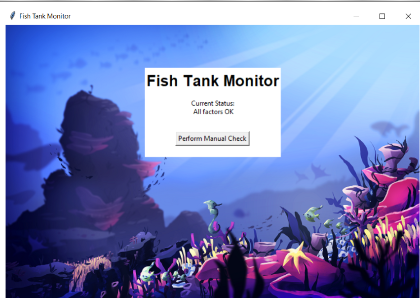

This is my Portfolio Page!

First Project Crumbl Cookie
For my first project me and my partner built a build your own Crumbl Cookie. you were able to choose from different cookies and able to add whatever topping you would enjoy. you were then able to leave with a to go box saying have a nice day.
Me and my partner built a game similar to Snake called Shark attack. A shark is swimming around trying to bite fish to gain score, but if it eats the Gorilla, the shark will die.

Me and my partners made a Christmas card that greets you. We have a backround, text, images and snowflakes that move when you move the mouse around them. It leaves you with a Merry Christmas and a Happy New Years.
